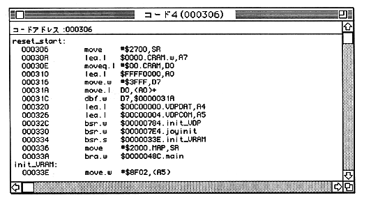
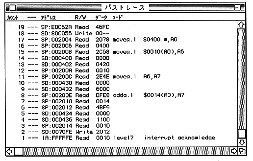

By clicking “Code Address”, you can enter the disassembly start address.
Line assembly can be performed by clicking the disassemble display in the window.

When displayed on the color display, the bus cycle is divided as follows.